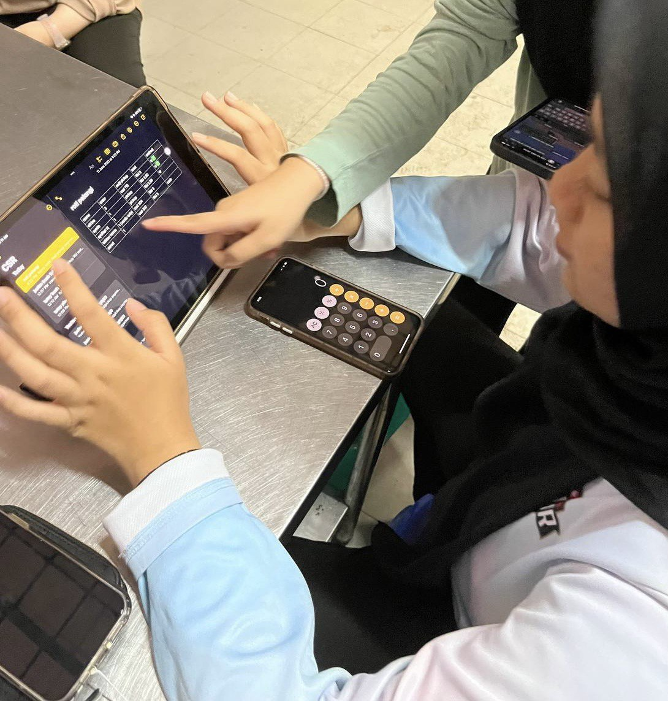
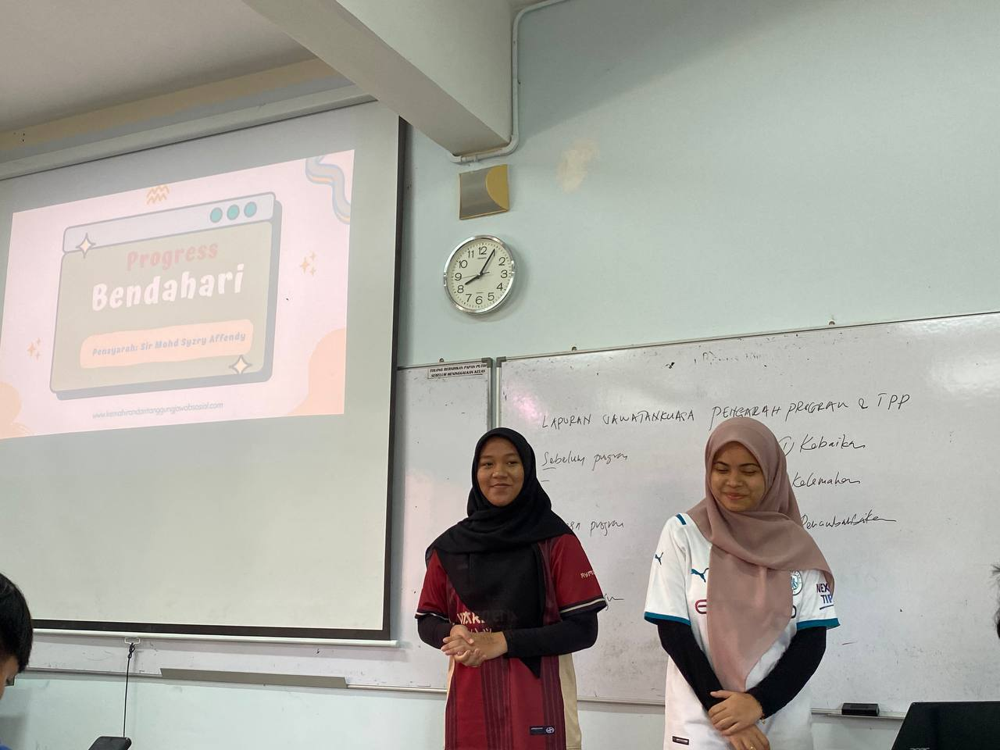
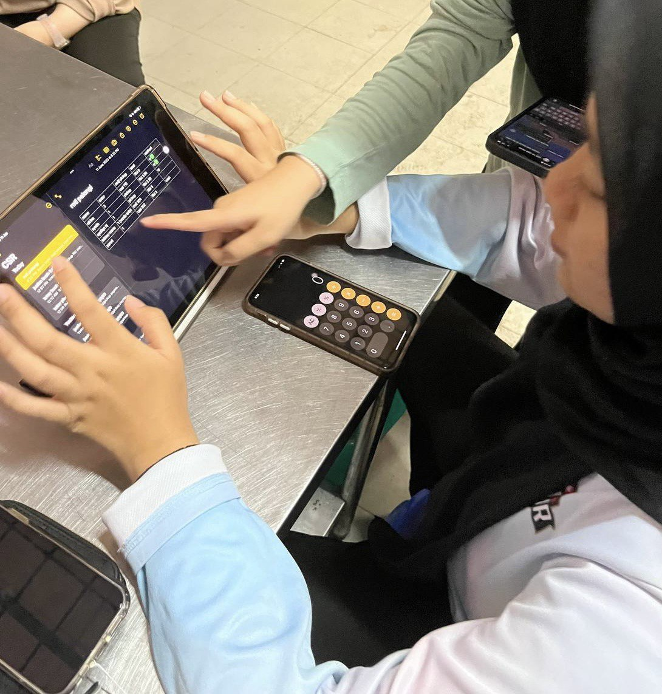
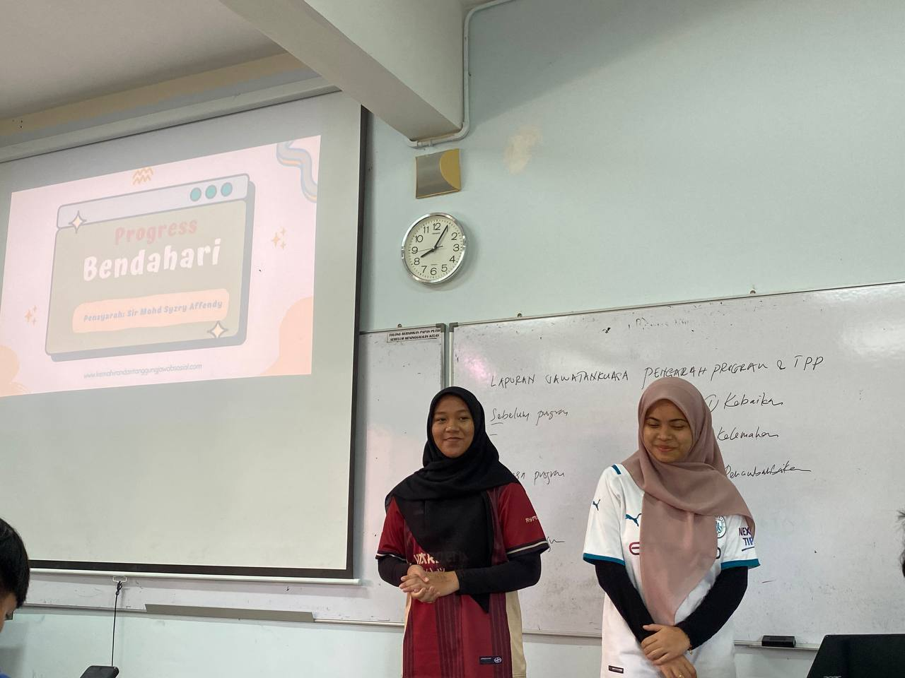

Soft Skills
These are the interpersonal skills that I have developed over the years through my work and personal experiences:
- Teamwork: Experience working by collaborative environments and supporting team and organization goals.
- Problem-solving: Ability to identify issues raised and develop active solutions in various situations.
- Time Management: Effectively managing time to balance multiple tasks and meet deadlines.
 



Hard skills
These are the technical skills i have acquired through my education and experience in the web development industry:
- Programing Languages: HTML, CSS, Javascript
- Spreadsheet Proficiency (Excel): Advanced Excel skills to manipulate large data sets, create financial models, and automate tasks with formulas/macros
- Microsoft app: Effectively using all the microsoft app diligently